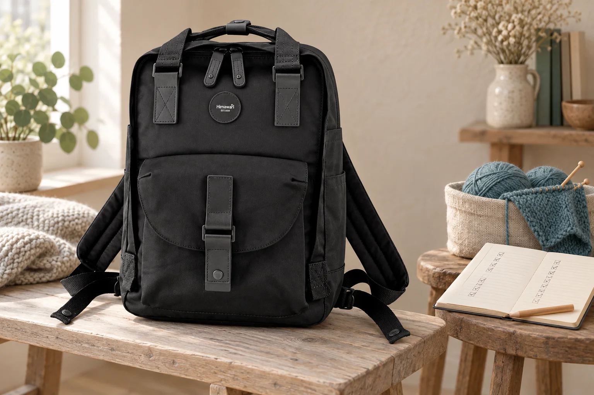
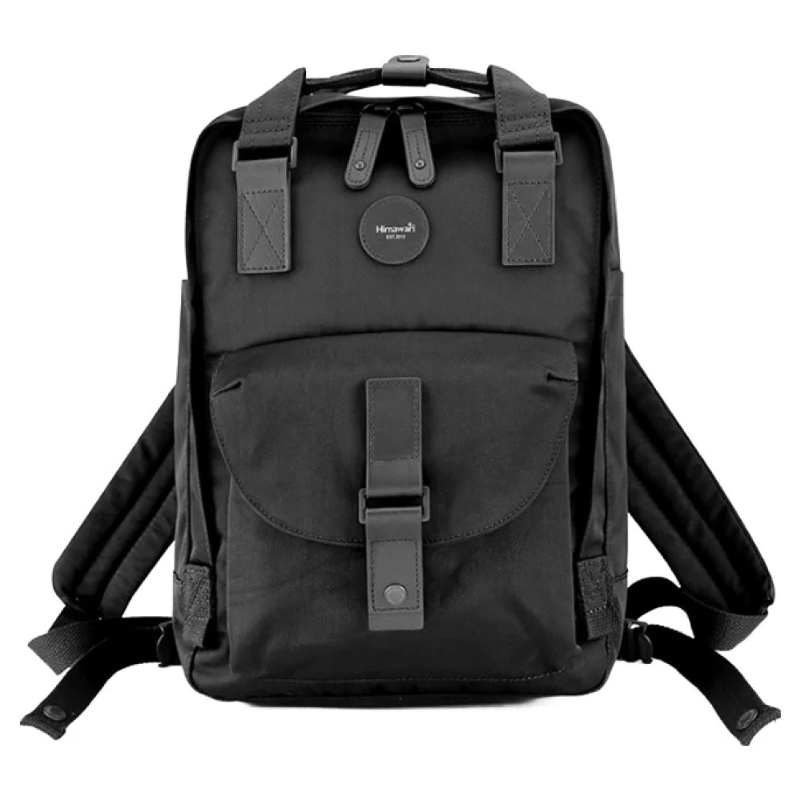

백팩 속 파우치, 몇 개로 나누어야 편할까

충전선과 어댑터, 마우스와 작은 연결 부품을 각각 파우치에 넣으면 가지런해 보입니다. 막상 책상에 앉으면 네 개를 차례로 열고 빈 파우치의 자리도 따로 찾아야 할 수 있습니다. 백팩을 나누어 정리할 때에는 파우치의 개수와 실제 사용 묶음을 함께 봅니다. 한 번에 꺼낼 도구가 무엇인지 알면 더 나눌 자리와 합칠 자리를 구분하기 쉽습니다.
먼저 가방에서 파우치만 모두 꺼내 펼쳐봅니다. 내용물을 바로 섞지 말고 평소 함께 열었던 것끼리 가까이 놓습니다. 충전기와 선을 늘 같이 쓴다면 두 파우치를 연달아 여는 일이 반복되는지 떠올려보세요. 반대로 자주 쓰는 소품과 거의 열지 않는 예비품을 한꺼번에 펼치고 있었다면 분리할 이유가 생깁니다. 실제로 같이 쓰는지부터 보는 단계입니다.
파우치 하나를 더하면 늘어나는 것
빈 파우치에도 겉감과 여밈, 모서리의 두께가 있습니다. 납작한 물건을 하나씩 넣은 파우치들이 겹치면 내용물 외의 부분이 차지하는 자리도 생깁니다. 자신의 파우치를 닫아 나란히 놓고 겹치는 모서리와 지퍼 손잡이를 봅니다. 가방의 주수납부가 꽉 차기 시작했다면 물건을 줄이는 일에 앞서 같은 용도의 포장이 중복되는지 살펴볼 수 있습니다.
여밈의 수는 꺼낼 때뿐 아니라 마칠 때도 영향을 줍니다. 가방 지퍼를 열고 파우치 두 개를 연 뒤 작은 케이스까지 열었다면 닫을 순서도 그만큼 남습니다. 각 보관품이 실제로 필요한지는 담긴 물건의 조건에 따라 판단합니다. 보호나 분리가 필요한 케이스는 유지하고, 별도 목적이 없는 겹주머니부터 합칠 수 있는지 봅니다.
파우치 수를 줄일 때에도 함께 쓰는 묶음은 유지할 수 있습니다. 서로 함께 쓰는 충전 도구를 한 묶음으로 하고 개인 필기구는 다른 묶음으로 두는 식의 구성이 가능합니다. 합친 묶음을 한 번 잡아 꺼낼 수 있는지 직접 해봅니다. 물건이 많아졌다는 이유보다 사용하는 순서가 연결되는지가 분할의 기준입니다.
작은 파우치가 큰 짐의 길을 막는다면
백팩 안에 여러 파우치를 층층이 쌓으면 아래의 큰 물건을 꺼낼 때 위쪽을 먼저 비워야 할 수 있습니다. 파일을 한 번 꺼내며 몇 개의 파우치를 옮기는지 봅니다. 파우치의 색과 이름을 잘 구분해도 꺼낼 길이 막히면 동작은 줄어들지 않습니다. 큰 물건 옆으로 둘 수 있는 형태와 위에 놓을 형태를 현재 가방에서 나누어봅니다.
둥근 필통과 납작한 주머니는 빈 공간에 놓이는 모양이 다릅니다. 각각의 외형을 유지한 채 놓았을 때 어떤 조합이 자연스럽게 닫히는지 비교합니다. 파우치가 너무 커서 여유가 많이 남는다면 그 파우치 하나를 바꾸는 방법도 있습니다. 전체 보관품을 모두 같은 세트로 바꾸기보다 공간을 크게 차지하는 한 묶음부터 살펴보면 변화의 이유를 알기 쉽습니다.
Himawari No.200 제품 정보의 검정 원본에서는 네모난 본체와 앞면의 덮개 형태를 볼 수 있습니다. 내부 파우치 구성을 직접 보여 주는 사진은 아니므로 자신의 보관품을 실제 가방에 대조해야 합니다. 안내된 외부 크기는 가로 28 × 세로 39 × 폭 15cm입니다. 이 바깥 숫자로 안쪽에 필요한 파우치 개수를 정하지 않고 현재 사용하는 묶음의 크기와 꺼내는 길을 비교합니다.

함께 열 것과 따로 남길 것
하루 동안 쓰는 작업 도구와 여행 때만 쓰는 예비품을 나누면 가방에서 펼칠 범위를 줄일 수 있습니다. 평소 책상에서 한꺼번에 쓰는 기기 소품은 같은 파우치로 모으되 각 물건의 보관 안내를 지킵니다. 용기나 날카로운 도구처럼 다른 물건과 분리가 필요한 것은 별도 조건을 먼저 봅니다. 개수 하나를 정답으로 두기보다 합쳐도 되는 묶음과 떨어져 있어야 할 묶음을 구별합니다.
자주 바꾸는 가방이 두 개 있다면 묶음 하나를 옮기는 편의도 생각할 수 있습니다. 평일 작업 도구를 여러 포켓에 따로 두었다면 옮길 때 빠뜨릴 범위가 늘어납니다. 파우치로 모으면 같은 구성을 통째로 옮길 수 있지만 다른 가방의 입구에도 맞는지 확인해야 합니다. 가방을 바꾸는 빈도가 낮다면 고정 포켓을 활용하는 편이 더 단순할 수도 있습니다.
작은 물건 하나를 찾으려고 큰 파우치를 매번 전부 펼치고 있다면 그 물건만 접근할 자리를 만들 수 있습니다. 예를 들어 이동 중 쓰는 카드와 책상에서 쓸 도구를 같은 주머니에 두었다면 사용하는 순간이 다릅니다. 둘을 나누는 변화는 파우치의 수를 무조건 줄이는 목표와 다를 수 있습니다. 무엇을 쉽게 찾으려 했는지가 남아 있어야 개수도 이유 있게 정해집니다.
합치기 전후의 동작을 한 번씩 보기
기존 파우치에서 두 묶음을 꺼내던 순서를 먼저 해봅니다. 그다음 함께 써도 되는 물건을 한 파우치에 정리해 같은 작업을 준비합니다. 다른 짐을 옮긴 횟수와 연 여밈의 수가 어떻게 달라졌는지 기억합니다. 처음부터 모든 파우치를 바꾸면 익숙함까지 달라지므로 자주 함께 열었던 한 쌍부터 비교할 수 있습니다.
합친 뒤에는 원래 따로 담았던 이유가 남아 있는지도 봅니다. 단단한 플러그가 작은 기기와 직접 닿거나 필기구 끝이 다른 소품을 누르면 그 접촉을 나눌 방법이 필요합니다. 하나로 줄였다는 결과보다 각 물건을 안내에 맞게 보관할 구성이 유지되는지가 먼저입니다.
다음에 가방을 비울 때에는 거의 열지 않은 파우치 하나를 따로 봅니다. 다음 일정에도 필요한지 판단하고 남겨둘 경우 어느 역할을 맡는지 정합니다. 파우치 이름을 바꾸거나 표식을 더하는 일은 남은 구성이 정해진 뒤에 해도 됩니다. 쓰는 묶음과 꺼내는 길이 정리되면 가방 안의 개수를 늘릴지 줄일지 판단할 근거가 생깁니다.